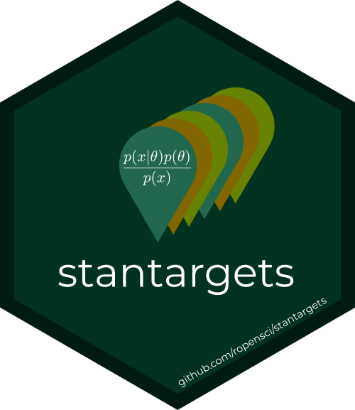
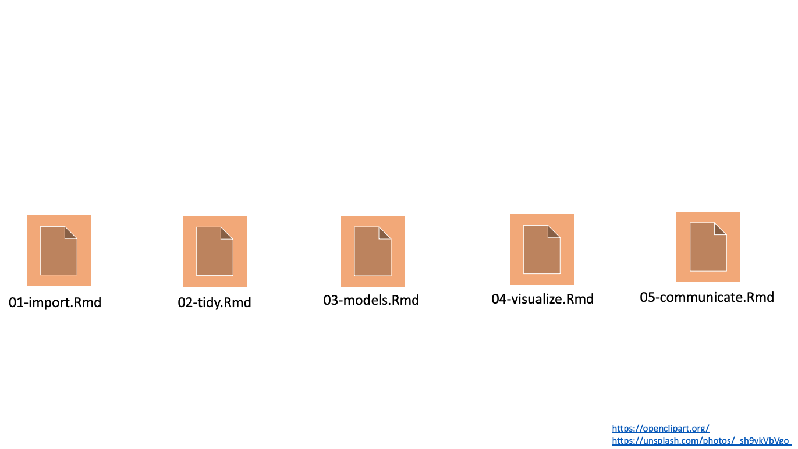
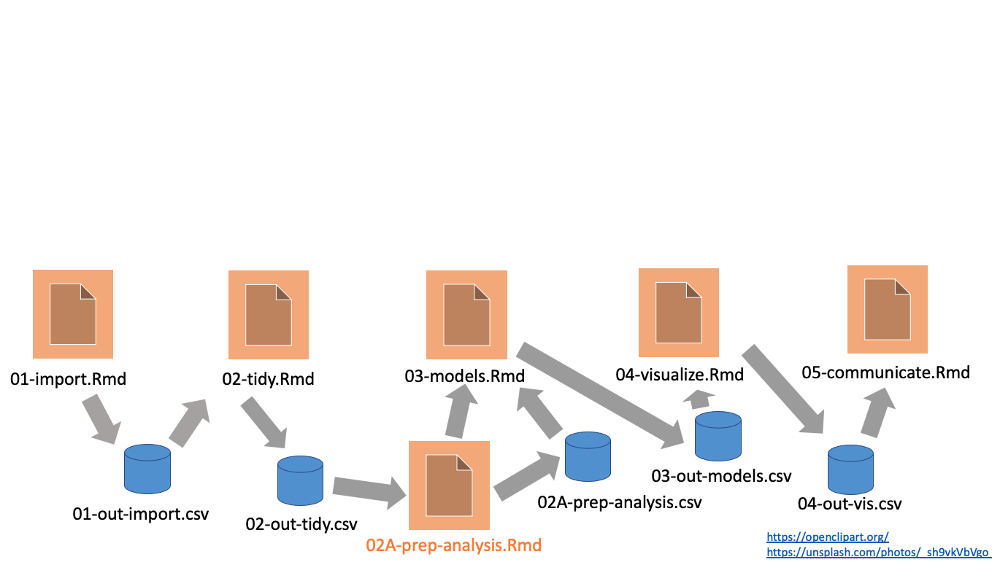
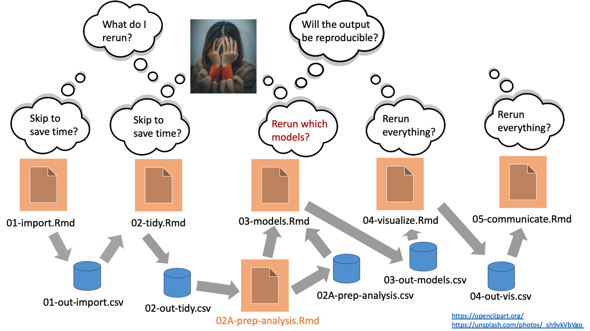
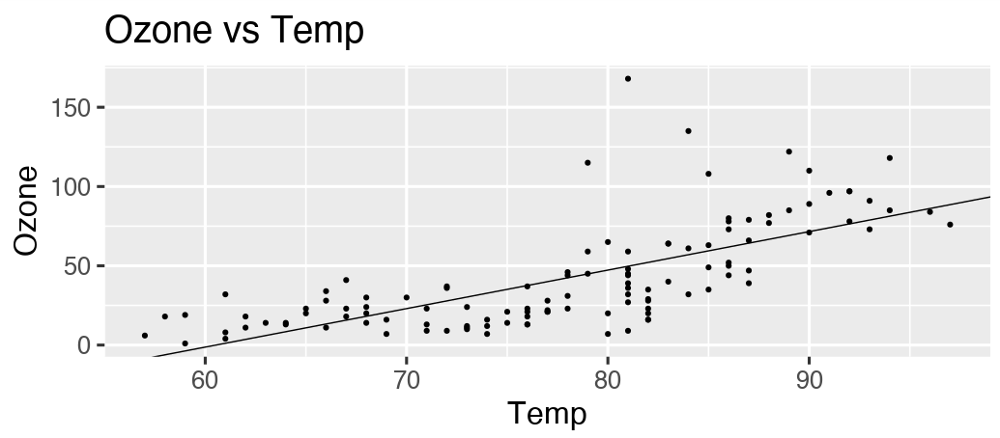

# _targets.R file, written by use_targets() and then modified
# Setup:
library(targets)
tar_option_set(packages = c("dplyr", "ggplot2", "readr"))
options(clustermq.scheduler = "multicore")
tar_source() # Run scripts in the R/ folder.
# Pipeline definition:
list(
tar_target(name = file, command = "data.csv", format = "file"),
tar_target(name = data, command = get_data(file)),
tar_target(name = model, command = fit_model(data)),
tar_target(name = plot, command = plot_model(model, data))
)Bayesian pipelines with stantargets
Will Landau
Demanding computation in R
- Bayesian data analysis: Stan, JAGS, NIMBLE,
greta - Deep learning:
keras,tensorflow,torch - Machine learning:
tidymodels - PK/PD:
nlmixr,mrgsolve - Clinical trial simulation:
rpact,Mediana - Statistical genomics
- Social network analysis
- Permutation tests
- Database queries:
DBI - Big data ETL
Typical notebook-based project
Messy reality: managing data
Messy reality: managing change
Pipeline tools

- Orchestrate moving parts.
- Scale the computation.
- Manage output data.
targets
- Designed for R.
- Encourages good programming habits.
- Automatic dependency detection.
- Behind-the-scenes data management.
- Distributed computing.
Resources
- Get started in four minutes: https://vimeo.com/700982360
- Example project: https://github.com/wlandau/targets-four-minutes
- Documentation website: https://docs.ropensci.org/targets/
- User manual: https://books.ropensci.org/targets/
Get started
- Write functions.
- Produce datasets, analyze datasets, and summarize analyses.
- Return clean exportable R objects (can be saved in one R process and read in another).
- Minimize side effects.
- R scripts in an
R/folder of the project.
- Call
use_targets()to generate code files fortargets. - Edit
_targets.Rby hand to define the pipeline.- Start small first if your full project is large or computationally demanding.
- Use
tar_manifest()andtar_visnetwork()to inspect the pipeline. - Use
tar_make()to run the pipeline. - Inspect the results with
tar_read()ortar_load(). - Scale up the pipeline if you started small.
Example pipeline
Example usage

tar_mermaid()graph:
graph LR
subgraph legend
x7420bd9270f8d27d([""Up to date""]):::uptodate --- x0a52b03877696646([""Outdated""]):::outdated
x0a52b03877696646([""Outdated""]):::outdated --- xbf4603d6c2c2ad6b([""Stem""]):::none
xbf4603d6c2c2ad6b([""Stem""]):::none --- xf0bce276fe2b9d3e>""Function""]:::none
end
subgraph Graph
xe1eeca7af8e0b529(["model"]):::uptodate --> xe345e05e168a80f1(["summary"]):::uptodate
xb7119b48552d1da3(["data"]):::uptodate --> xaf95534ce5e3f59e(["plot"]):::outdated
xe1eeca7af8e0b529(["model"]):::uptodate --> xaf95534ce5e3f59e(["plot"]):::outdated
x619ade380bedf7c2>"plot_model"]:::outdated --> xaf95534ce5e3f59e(["plot"]):::outdated
x6d51284275156668(["file"]):::uptodate --> xb7119b48552d1da3(["data"]):::uptodate
xd69ee82cddb4d6bb>"get_data"]:::uptodate --> xb7119b48552d1da3(["data"]):::uptodate
xb7119b48552d1da3(["data"]):::uptodate --> xe1eeca7af8e0b529(["model"]):::uptodate
x9c2a6d6bf64731cc>"fit_model"]:::uptodate --> xe1eeca7af8e0b529(["model"]):::uptodate
end
classDef uptodate stroke:#000000,color:#ffffff,fill:#354823;
classDef outdated stroke:#000000,color:#000000,fill:#78B7C5;
classDef none stroke:#000000,color:#000000,fill:#94a4ac;
linkStyle 0 stroke-width:0px;
linkStyle 1 stroke-width:0px;
linkStyle 2 stroke-width:0px;
- See also
tar_visnetwork(). - Details: https://wlandau.github.io/targets-intro.
Parallel computing (1/2)
- Call
use_targets()to automatically configuretargetsfor your system.- Writes
_targets.R,clustermq.tmpl, andfuture.tmplfor a cluster if you have one (Slurm, SGE, PBS, TORQUE, or LSF). - Otherwise,
use_targets()configures_targets.Rto use local multi-process computing.
- Writes
- Performance:
tar_option_set()and other choices:memory:"transient"or"persistent"storage:"main"or"worker"retrieval:"main"or"worker"deployment:"main"or"worker"- Choose a branching/batching for optimal scale if needed.
- Choose a folder for the project and data store where the file system is fast.
Parallel computing (2/2)
- Run the pipeline for a desired
nmaximum workers:tar_make_clustermq(workers = n)for persistent workers.tar_make_future(workers = n)for transient workers.
- Trust the package to orchestrate the targets.
model1andmodel2run in parallel afterdatafinishes.summary1runs aftermodel1is done.summary2runs aftermodel2is done.summary1andsummary2can run in parallel.resultswaits for bothsummary1andsummary2.
graph LR
subgraph Graph
xb7119b48552d1da3(["data"]):::outdated --> xd2415809dfccb1c9(["model1"]):::outdated
xb7119b48552d1da3(["data"]):::outdated --> x5e90f77e4394a7c0(["model2"]):::outdated
xe7486797ee90ffad(["summary1"]):::outdated --> x26a6b9ffae1b7593(["results"]):::outdated
x7af94b1ab69cf0e7(["summary2"]):::outdated --> x26a6b9ffae1b7593(["results"]):::outdated
xd2415809dfccb1c9(["model1"]):::outdated --> xe7486797ee90ffad(["summary1"]):::outdated
x5e90f77e4394a7c0(["model2"]):::outdated --> x7af94b1ab69cf0e7(["summary2"]):::outdated
end
classDef outdated stroke:#000000,color:#000000,fill:#78B7C5;
classDef none stroke:#000000,color:#000000,fill:#94a4ac;
Extending targets

Target factories
- A target factory is a reusable function that creates target objects.
- Usually requires metaprogramming: http://adv-r.had.co.nz/Computing-on-the-language.html#substitute
#' @title Example target factory in an R package.
#' @export
#' @description A target factory to analyze data.
#' @return A list of 3 target objects to:
#' 1. Track the file for changes,
#' 2. Read the data in the file, and
#' 3. Analyze the data.
#' @param File Character of length 1, path to the file.
target_factory <- function(file) {
list(
tar_target_raw("file", file, format = "file", deployment = "main"),
tar_target_raw("data", quote(read_data(file)), format = "fst_tbl", deployment = "main"),
tar_target_raw("model", quote(run_model(data)), format = "qs")
)
}Target factories simplify pipelines.
Enter stantargets
Target factories for Stan
- Closely follows the function interface of
cmdstanr: https://mc-stan.org/cmdstanr/reference/index.html.
| Algorithm | Single-rep multi-output | Multi-rep single-output |
|---|---|---|
| MCMC | tar_stan_mcmc() |
tar_stan_mcmc_rep_draws() tar_stan_mcmc_rep_diagnostics() tar_stan_mcmc_rep_summary() |
| Gen. Qty. | tar_stan_gq() |
tar_stan_gq_rep_draws() tar_stan_gq_rep_summary() |
| Variational | tar_stan_vb() |
tar_stan_vb_rep_draws() tar_stan_vb_rep_summary() |
| Optimization | tar_stan_mle() |
tar_stan_mle_rep_draws() tar_stan_mle_rep_summary() |
| Compilation | tar_stan_compile() |
|
| Summaries | tar_stan_summary() |
tar_stan_mcmc()
- Run the model once.
- Create targets for MCMC draws, summaries, and HMC/NUTS diagnostics.
graph LR
subgraph Graph
x4cd7b5c3c125f548(["example_data"]):::outdated --> xecfe54c2d4fb279d(["example_summary_model"]):::outdated
x6cc8b8be867e1e0d(["example_mcmc_model"]):::outdated --> xecfe54c2d4fb279d(["example_summary_model"]):::outdated
x6cc8b8be867e1e0d(["example_mcmc_model"]):::outdated --> x54294c764991c41d(["example_diagnostics_model"]):::outdated
x6cc8b8be867e1e0d(["example_mcmc_model"]):::outdated --> xc4714540b066b032(["example_draws_model"]):::outdated
x4cd7b5c3c125f548(["example_data"]):::outdated --> x6cc8b8be867e1e0d(["example_mcmc_model"]):::outdated
x7959ddde0153f85d(["example_model_file"]):::outdated --> x6cc8b8be867e1e0d(["example_mcmc_model"]):::outdated
end
classDef outdated stroke:#000000,color:#000000,fill:#78B7C5;
classDef none stroke:#000000,color:#000000,fill:#94a4ac;
tar_stan_mcmc_rep_summary()
- Run the model multiple times in batches over many randomly-generated datasets.
- Only return posterior summaries.
graph LR
subgraph Graph
x4cd7b5c3c125f548["example_data"]:::outdated --> xbeea21a0642714d5["example_model"]:::outdated
xbeea21a0642714d5["example_model"]:::outdated --> xe6eda53558c41c5e(["example"]):::outdated
x7205eb8b5739d5b6(["example_file_model"]):::outdated --> x4cd7b5c3c125f548["example_data"]:::outdated
xa2d1919ce1427f12(["example_batch"]):::outdated --> x4cd7b5c3c125f548["example_data"]:::outdated
end
classDef outdated stroke:#000000,color:#000000,fill:#78B7C5;
classDef none stroke:#000000,color:#000000,fill:#94a4ac;
tar_stan_mcmc_rep_draws()
- Run the model multiple times in batches over many randomly-generated datasets.
- For each replication, return an arbitrary function of the data and posterior draws.
- Straightforward to adapt for simulation-based calibration with the SBC package (Kim et al. 2022).
# _targets.R ...
get_ranks <- function(data, draws) {
draws <- select(draws, starts_with(names(data$.join_data)))
truth <- map_dbl(
names(draws),
~eval(parse(text = .x), envir = data$.join_data)
)
out <- SBC::calculate_ranks_draws_matrix(truth, as_draws_matrix(draws))
as_tibble(as.list(out))
}
list(
stantargets::tar_stan_mcmc_rep_draws(
name = example,
transform = get_ranks
...
)
)Example model
- Bayesian longitudinal linear model of a continuous endpoint in a clinical trial:
\[ \begin{aligned} & y \sim \text{MVN}(X_{(n \cdot t) \times p} \beta, \ I_{n \times n} \otimes \Sigma_{t \times t} ) \\ & \qquad \beta \sim \text{MVN} (0, s_\beta^2 I_{p \times p})\\ & \qquad \Sigma_{t \times t} = \left (I_{t \times t} \sigma \right ) \Lambda_{t \times t} \Lambda_{t \times t}' \left (I_{t \times t} \sigma \right ) \\ & \qquad \qquad \sigma_1, \ldots, \sigma_t \stackrel{\text{ind}}{\sim} \text{Uniform}(0, s_\sigma) \\ & \qquad \qquad \Lambda_{t \times t}\Lambda_{t \times t}' \sim \text{LKJ}(\text{shape} = s_\lambda, \text{order} = t) \end{aligned} \]
- \(n\): number of patients
- \(t\): number of scheduled study visits (discrete time)
- \(p\): number of fixed effects
- \(y\): constant vector of \(n \cdot t\) observed clinical outcomes (1 per patient visit).
- \(X_{(n \cdot t) \times p}\): model matrix with \(n \cdot t\) rows and \(p\) columns with treatment assignments and baseline covariates.
- \(\beta\): parameter vector of \(p\) fixed effects.
- \(\otimes\): Kronecker product.
- \(\Sigma_{t \times t}\): residual covariance block (visits within patient)
- \(\Lambda_{t \times t}\): lower-triangular Cholesky factor of the residual correlation matrix block (visits within patient).
- \(\sigma = (\sigma_1, \ldots, \sigma_t)\), where \(\sigma_s\) is the residual SD for visit \(s\).
- \(s_\beta\), \(s_\sigma\), \(s_\lambda\): scalar hyperparameters
Example code to run the model with stantargets
- https://github.com/wlandau/stantargets-talk
demo_analysis.R: analyze a single dataset and inspect the results.demo_simulation.R: simulate multiple datasets and evaluate convergence and coverage in posterior intervals.demo_sbc.R: check the correctness of the Stan code using simulation-based calibration (SBC; Talts et al. 2020, Cook et al. 2006).
Thanks
- Jarad Niemi sparked my interest in pipeline tools.
- Rich FitzJohn’s
remakepackage established breakthrough concepts for pipelines in R. - rOpenSci reviewed, adopted, and promoted
targetsandstantargets. - Contributions from the community:
Sources
- Bürkner P, Gabry J, Kay M, Vehtari A (2022). “posterior: Tools for Working with Posterior Distributions.” R package version 1.3.1, https://mc-stan.org/posterior/.
- Cook, Samantha R., Andrew Gelman, and Donald B. Rubin. 2006. “Validation of Software for Bayesian Models Using Posterior Quantiles.” Journal of Computational and Graphical Statistics 15 (3): 675–92. http://www.jstor.org/stable/27594203.
- Gabry, J., & Češnovar, R. (2021). “Cmdstanr: R interface to CmdStan”. <https://mc-stan. org/cmdstanr>.
- Kim, Shinyoung, Hyunji Moon, Martin Modrák, and Teemu Säilynoja. 2022. “SBC: Simulation Based Calibration for Rstan/Cmdstanr Models.”
- Landau, W. M. (2021). “The targets R package: A dynamic make-like function-oriented pipeline toolkit for reproducibility and high-performance computing.” Journal of Open Source Software, 6(57), 2959. https://doi.org/10.21105/joss.02959
- Landau, W. M., (2021). “The stantargets R package: a workflow framework for efficient reproducible Stan-powered Bayesian data analysis pipelines.” Journal of Open Source Software, 6(60), 3193, https://doi.org/10.21105/joss.03193.
- Stan Development Team. (2012). “Stan: A C++ library for probability and sampling.” <https: //mc-stan.org>
- Talts, Sean, Michael Betancourt, Daniel Simpson, Aki Vehtari, and Andrew Gelman. 2020. “Validating Bayesian Inference Algorithms with Simulation-Based Calibration.” https://arxiv.org/abs/1804.06788.
© 2022 Eli Lilly and Company